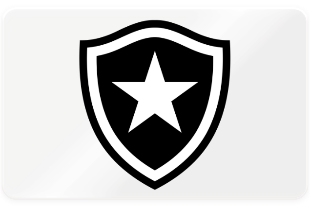
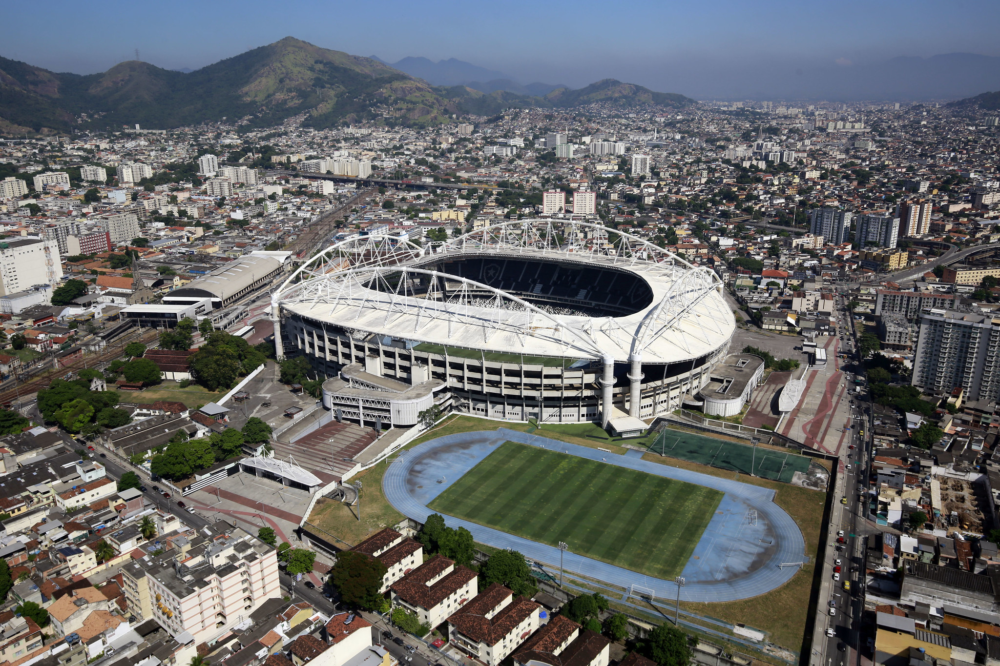
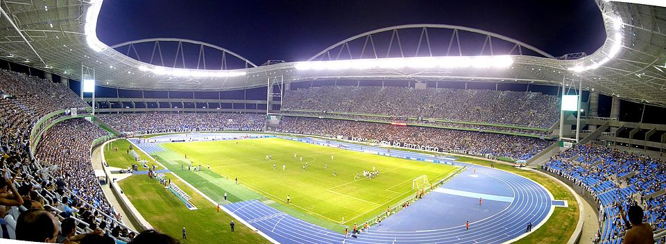
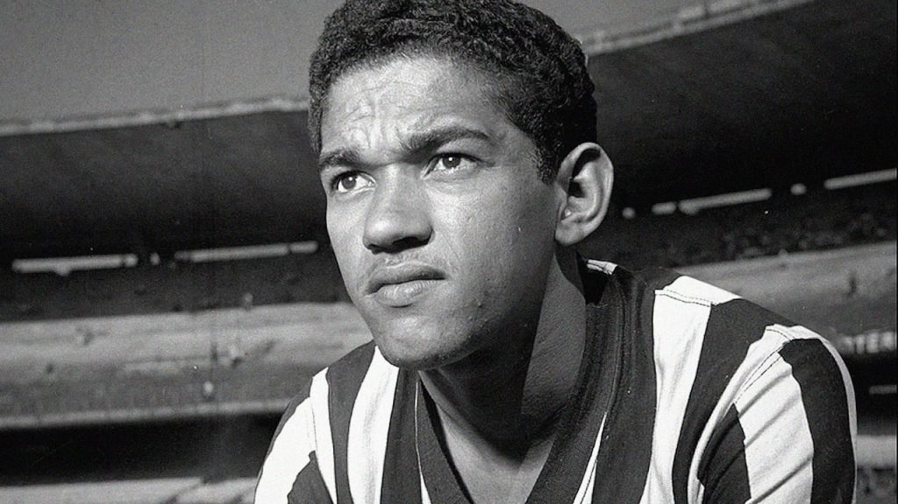
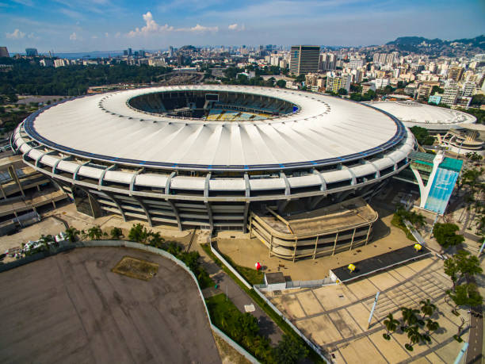
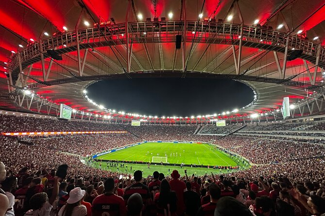
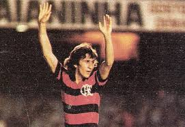
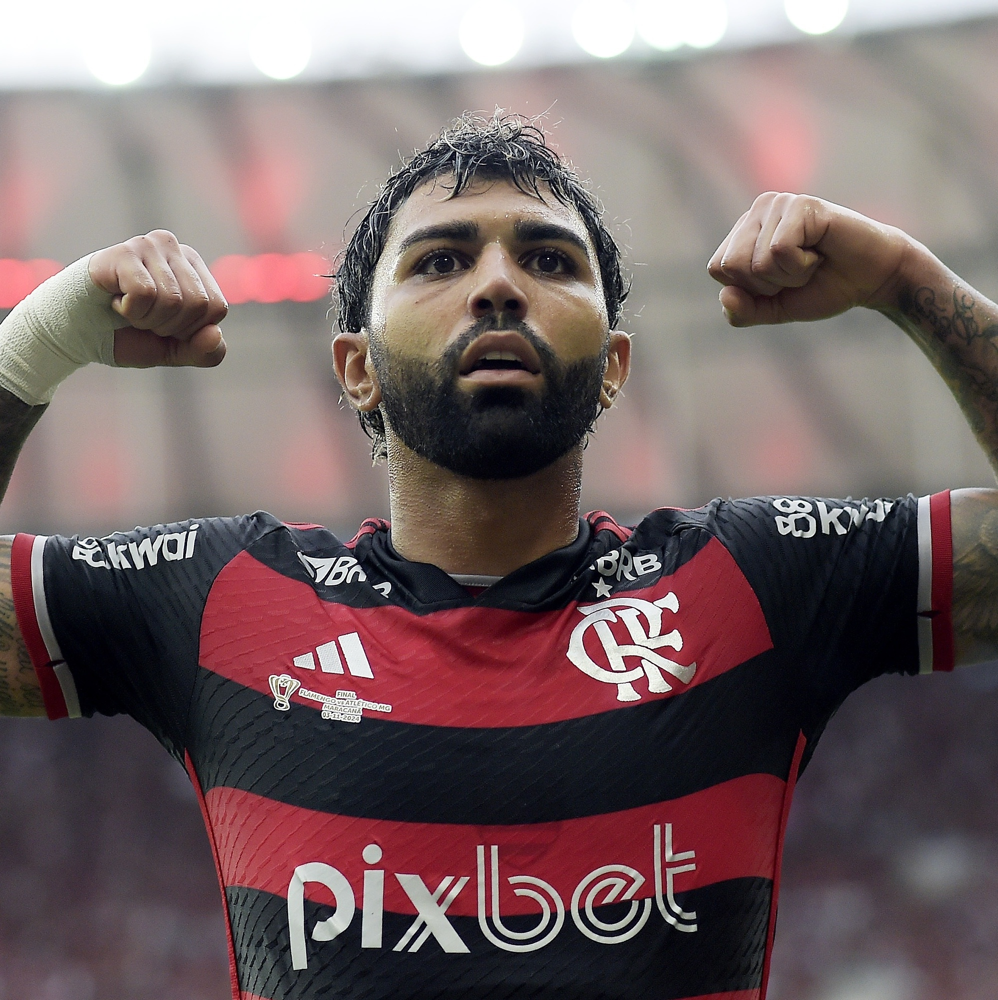

A rivalidade entre Botafogo e Flamengo vai muito além das quatro linhas — é uma disputa histórica entre tradição e potência popular.
O Flamengo, com a maior torcida do Brasil, se destaca por seu poder financeiro, receitas milionárias, elencos estrelados e títulos de expressão internacional, como as Libertadores de 1981, 2019 e 2022.
Já o Botafogo, conhecido por sua tradição, revelou lendas como Garrincha e Nilton Santos, e vem se reestruturando financeiramente nos últimos anos com a gestão SAF, mostrando força no Brasileirão e na base.
Enquanto o Flamengo ostenta um dos elencos mais valiosos da América do Sul, o Botafogo aposta na organização tática, em jovens promessas e na recuperação de sua grandeza. No papel, a vantagem rubro-negra é clara em títulos e investimentos — mas na alma do torcedor e dentro de campo, essa é sempre uma briga de gente grande.
Botafogo

Descrição: Escudo do Botafogo, contendo sua estrela solitária, como é chamado pela torcida.
Fundação: Sua história começa com a fundação do Club de Regatas Botafogo em 1894 e, paralelamente, do Botafogo Football Club em 1904, que posteriormente se fundiram em 1942 para formar o Botafogo de Futebol e Regatas.
O clube é conhecido por suas cores preto e branco, a estrela solitária em seu escudo, e por ser um dos quatro grandes clubes do futebol carioca.


Descrição: Foto 1: Imagem aérea do Estádio Nilton Santos. Foto 2: Imagem interna do estádio em dia de jogo.
Títulos Nacionais:5 (3 Campeonatos Brasileiros e 2 Campeonatos Brasileiros Série B)
Títulos Estaduais:21
Títulos Continentais:2 (1 Copa Libetadores da América e 1)
Craque do passado x Craque do presente:
Garrincha

Garrincha conquistou 6 títulos oficiais pelo Botafogo: três Campeonatos Cariocas (1957, 1961 e 1962), dois Torneios Rio-São Paulo (1962 e 1964) e uma Taça dos Campeões Estaduais Rio-São Paulo (1961).
Disputou 612 partidas e marcou 245 gols pelo clube de General Severiano.
Igor Jesus
Igor Jesus chegou ao Botafogo em julho de 2024 e conquistou dois títulos importantes: a Libertadores e o Campeonato Brasileiro, ambos em 2024.
Foram 58 jogos no total, com 17 gols marcados por Igor Jesus pelo Botafogo e seis assistências. Em julho de 2025, após o clube disputar a primeira edição da Copa do Mundo de Clubes, o jogador foi vendido ao Nottingham Forest, da Inglaterra.
Descrição: Escudo do Flamengo, também chamado de Rubro-Negro por sua torcida devido as suas cores(vermelho e preto).
Fundação: Foi fundado em 17 de novembro de 1895, no Rio de Janeiro, inicialmente para a prática de remo.
A equipe de futebol surgiu em 1912, após uma divisão com o Fluminense, e rapidamente se tornou uma força no cenário esportivo brasileiro.


Descrição: Foto 1: Imagem aérea do estádio Maracanã. Foto 2: Imagem interna do estádio em dia de jogo do Flamengo.
Títulos Nacionais:5 (8 Campeonatos Brasileiros, 5 Copas do Brasil, 3 Supercopas)
Títulos Estaduais:39
Títulos Internacionais:2 (3 Copas Libetadores da América, 1 Recopa Sul-Americana e 1 Mundial de Clubes)
Craque do passado x Craque do presente:
Zico

Zico, também conhecido como Galinho de Quintino ostenta o posto de maior ídolo do Rubro-Negro, com diversos títulos e gols marcados ao longo da carreira.
Zico acumulou 509 gols e 168 assistências.
Gabriel Barbosa

Gabriel Barbosa, também conhecido como Gabigol atuou por 305 jogos com a camisa do Flamengo, conquistando 12 títulos, sendo 4 Campeonatos Carioca, 2 Campeonatos Brasileiros,
2 Copa Libertadores, 2 Supercopa do Brasil, 1 Copa do Brasil e 1 Recopa-Sulamericana.
O atacante balançou a rede por 160 vezes, sendo 16 gols em 11 finais e deu 44 assistências.
Sobre a última partida realizada entre as duas equipes:
" - Tem duas questões. A primeira é que a torcida no estádio é o reflexo direto do desempenho do time dentro de campo.
A torcida do Botafogo estava inflamada porque os torcedores estavam percebendo que o time estava melhor no jogo".